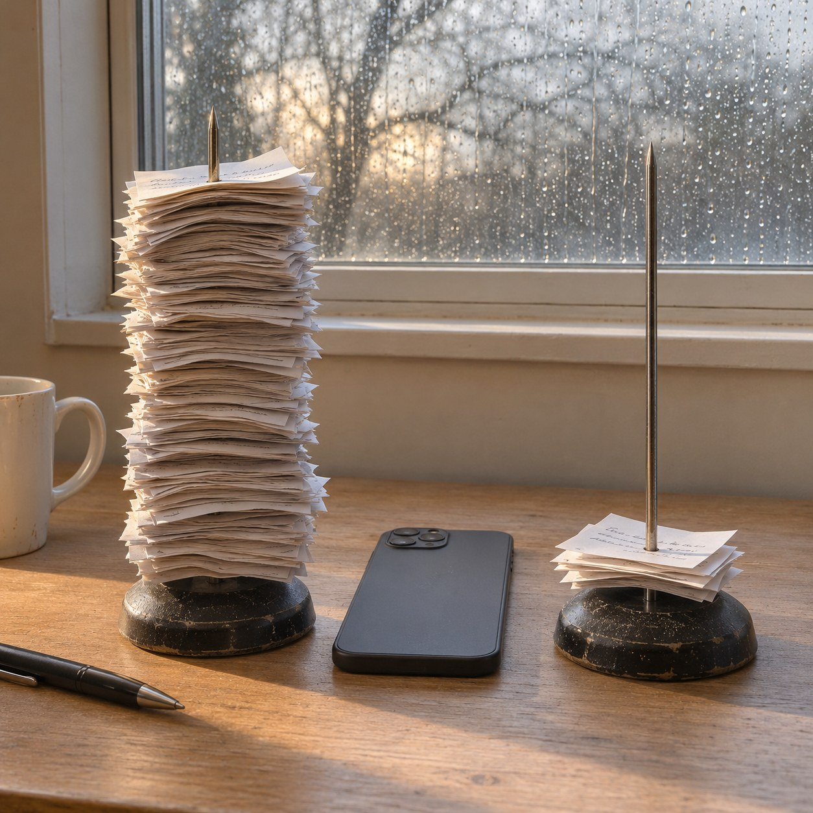
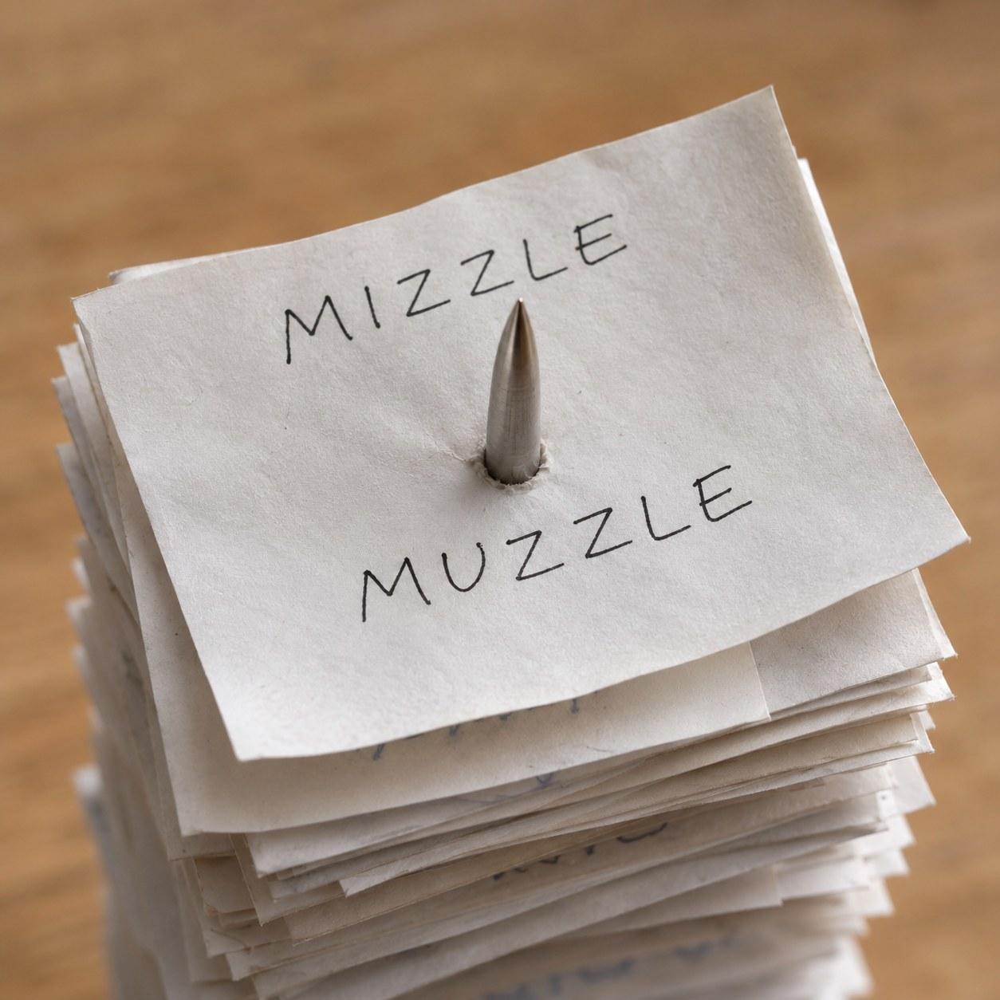

Second Guess


Mizzle is a word for rain so fine that it hangs in the air instead of falling. I typed it once, to say what the weather was doing, and my phone changed it to muzzle. It was sure of itself. It had never seen the word, so the word could not be what I meant.
For a year I wrote down every word the phone changed as I typed, each on its own slip of paper, my word above and its word below. If I changed it back, the slip went on one spike. If I let it go, it went on the other.
One spike is short. The other is nearly full.
Most of what I let go were small mistakes, a slipped finger or a doubled letter, and the phone was right. But not all. Some were names it did not know, words from places it had not heard of, words I had made up. Those it bent toward the nearest word that more people use. Not my word, and not the phone's either. A guess at what anyone would have meant, made from millions of strangers typing.
Freud thought that a slip of the tongue or the pen gave us away. Something we had kept down broke through, and for a moment we said what we really meant. My slips never reach anyone now. They are caught on the way out and replaced, quietly, with what most people mean.
Half of me makes the slips and half of me catches them. I cannot say which half filled the taller spike. Every message went out under my name, and nobody who read them could tell.
Outside it is mizzling again. I have typed the word so often that the phone lets it through now. It learned it from me, the way it learned everything else, from someone.